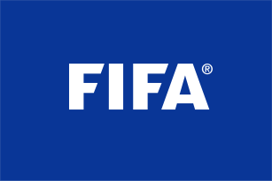

Futebol
Produtos

Bola de Futebol
Bola de Futebol muito legal
Tamanho: OficialR$ 50,00
Camisa do Vasco
Camisa oficial do time Vasco
Tamanhos: M, GR$ 200,00
Chuteira dourada
Chuteira banhada a ouro
Tamanhos: 39R$ 3000,00
História
O futebol, esse esporte universal que encanta multidões, tem uma história que remonta a tempos antigos. Os indícios de jogos que envolviam uma bola e os pés dos jogadores podem ser rastreados em civilizações antigas, como os chineses, gregos e romanos. No entanto, a forma moderna do futebol começou a tomar forma na Inglaterra nos séculos XVIII e XIX.
Foi na Inglaterra que as escolas e universidades começaram a padronizar o esporte, definindo regras que estabeleciam a base do que conhecemos hoje. Em 1863, a Football Association (FA) foi fundada na Inglaterra, e suas "Regras de Cambridge" tornaram-se amplamente aceitas, marcando o início da padronização do esporte.
O futebol ganhou popularidade de forma avassaladora e logo se espalhou para outros cantos do mundo. A primeira partida internacional registrada foi entre Inglaterra e Escócia em 1872. A crescente globalização do esporte levou à formação da FIFA (Fédération Internationale de Football Association) em 1904, tornando-se a autoridade internacional do futebol.
Em 1930, o Uruguai sediou a primeira Copa do Mundo de Futebol, um marco que se tornou o torneio internacional mais prestigiado do esporte, unindo nações em uma competição emocionante. Além das competições internacionais, o futebol viu o surgimento de ligas de clubes em todo o mundo. A English Premier League na Inglaterra, a La Liga na Espanha e muitas outras se tornaram ícones de competições de elite.
O futebol também deu origem a algumas das maiores estrelas do esporte, como Pelé, Diego Maradona, Lionel Messi e Cristiano Ronaldo, cada um deixando uma marca única na história do jogo. Hoje, o futebol é o esporte mais popular e assistido em todo o mundo, unindo nações e culturas sob uma única paixão. Milhões de fãs e jogadores celebram o esporte em competições de clubes, seleções nacionais e em torneios de renome, como a Copa do Mundo. É um fenômeno global que transcende fronteiras e idiomas, unindo pessoas de todas as esferas da vida em torno de uma paixão compartilhada.
Principais atletas
- Pelé (Edson Arantes do Nascimento): Pelé é considerado por muitos como o maior jogador de futebol de todos os tempos. Ele é um ícone do futebol brasileiro e conquistou três Copas do Mundo (1958, 1962 e 1970), além de inúmeras honrarias individuais ao longo de sua carreira.
- Diego Maradona: Diego Maradona, argentino, é reverenciado como um dos jogadores mais talentosos da história do futebol. Ele é especialmente lembrado por sua atuação na Copa do Mundo de 1986, quando liderou a Argentina à vitória e marcou o famoso "Gol do Século" contra a Inglaterra.
- Lionel Messi: Lionel Messi, argentino, é uma lenda do futebol moderno. Ele é conhecido por sua habilidade extraordinária, dribles incríveis e capacidade de marcar gols. Messi passou a maior parte de sua carreira no Barcelona, onde conquistou inúmeros títulos, e posteriormente se transferiu para o Paris Saint-Germain (PSG).